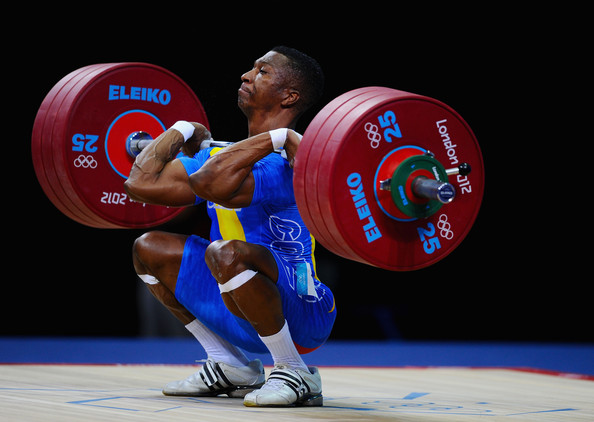
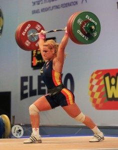

The olympic snatch, also known as 'the snatch' or 'the squat snatch' is a movement characterized by moving the barbell from the floor to overhead. The movement begins in a squat-like position with the knees over the toes, the hips in-line or lower than the knees, a flat back, and shoulders over the top of the bar. A wide grip will be placed on the barbell (typically 1-4 inches from the collars of the bar- a few more for female lifters) and the barbell will rest against or very close to the shins. To begin the lift a large breath will be taken into the stomach and the trunk will be tightened up. Movement will begin off the floor by pushing the feet evenly, strongly, and steadily into the ground. Ideally during this portion of the lift as the barbell travels from the floor to the knees (deemed 'the first pull'), the hips and shoulders will rise in unison. In a fluid motion into 'the second pull' of the lift, the barbell will pass the knees as the lifter maintains even, steady pressure into the floor and begins to pull the torse upright. During this motion, the knees will travel forward slightly, the trunk will remain tight, and the shoulders will stay over the bar. Once the barbell reaches the hip crease, the lifter will continue to push evenly through the legs and feet until the legs are straightened. This initiates 'the third pull' of the snatch. This forceful drive upwards through the legs and feet will bring the lifter onto their toes, and they keep the upward motion of the barbell going by pulling their shoulders and elbows upward and back. As the barbell approaches maximum height, the lifter will pick their feet up off the ground and place them back down while bending the knees and hips into a deep-squat position. The pull of the elbows and shoulders continues up and back during this movement of the feet until they connect with the ground. At this point the lifter will rotate the elbows so the forearms are over them rather than slightly under, and they will push up into the bar and lock out the elbows in a secure position with the barbell overhead. In a deep squat with the barbell securely overhead, the lifter will stand from the squat, and drop the barbell to the ground. The lift is now complete.
The olympic clean, also known has 'the clean' or 'squat clean' is characterized by moving the barbell from the floor to a front rack position with the bar resting on the front/top of the shoulders. The core principles of the clean are very similar to that of the snatch, minus a few key elements. The starting position of the clean will be a squat-like position like that of the snatch for some lifters, but for others the hips will be a bit above the knees. The grip taken on the bar in the clean will be closer than that of the snatch, as the bar will make contact with the upper thigh rather than the crease of the hip. A flat back, shoulders over the bar, and a big breath into the stomach will still characterize the beginning of the lift. Movement of the barbell will be initiated by an even, strong pressure through the foot into the ground. Hips and shoulders will rise in unison, like that of the clean. The first pull of the clean will end at the knees like the snatch, however it should be noted that the lifter's torso will be in a slightly more vertical position than that of the snatch. A shorter but equally explosive second pull will then commence, with an even-pressured drive upward through the feet to bring the torso almost vertical- with shoulders still over the barbell. At this position the barbell will be in contact with the upper thigh, shoulders will be over the bar, and even pressure will continue to be applied upward by the foot. As the legs straighten, the shoulders will shrug upward as the elbows pull upward and back and the lifter comes up onto their toes.  Continuing the upward pulling of the upper body, the lifter will pick the feet up off the floor and place them back down. As the barbell approaches maximal height the lifter will drive the elbows under the bar and let the bar rest on the front and top of the shoulders, keeping contact with the hands/fingers on the barbell. The lifter will now be in a deep squat with the barbell securely rested on a small shelf created on the front of the shoulders by pushing them up and forward. The lifter will stand up out of the squat, then drop the bar to the floor (or prepare for a jerk)- completing the lift.
The olympic jerk, also known as 'the split jerk' or 'the jerk' is the movement that will follow the clean in competition. The jerk is characterized by the movement of the barbell from the front rack position to overhead with locked elbows. The jerk looks a bit different than the snatch and clean, but this is mainly because the bar doesn't start on the floor. As with the other three lifts, the jerk will begin with a big breath into the stomach to help tighten the trunk. Then from a tall standing position, the lifter will let the knees bend while keeping the feet flat on the ground and the torso vertical. During this bend, tension will be built up on the quadriceps, or the muscles on the front of the leg. The degree of this bend will vary lifter to lifter, but typically it will be enough to create a forceful drive of the legs upward to elevate the barbell. After the bend, the lifter will drive the feet evenly and forcefully into the ground, extending the legs and keeping shoulder contact with the bar for as long as possible. As the lifter is fully extended the barbell will begin to leave the shoulders, at which point the lifter will pick up the legs and place one foot forward and one behind them, in a lunge position. At the same time as the lunge position is created, the lifter will be pushing themselves downward with the arms to create a stable position overhead for the barbell. The position of each foot at this point will ideally be equal front to back, creating a pyramid-style base. Once the bar is secure, the lifter will walk the front foot back, and the back foot forward, repeating 1-3 times until the lifter stands with both feet side by side with the barbell steady overhead. The lifter then drops the bar and the lift is complete.